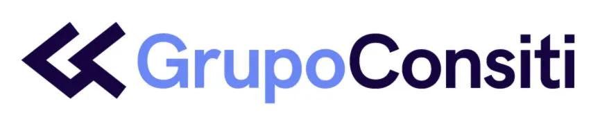

Empresas de Software en El Salvador
S&H SUPPORT
Es una consultora que brinda sus servicios de Outsourcing y Consultoría en el Área de Tecnología de la Informática. Están ampliando sus recursos a otras áreas afines.

INFILE S.A. DE C.V.
Importante empresa de servicios tecnológicos para facilitar la gestión de altos volúmenes de información al igual que el acceso y disponibilidad de la información. Comprometidos desde nuestro inicio en la actualización constante y protección de la base del conocimiento, desarrollando múltiples criterios, clasificaciones, índices, categorías, motores de búsqueda y diversas formas para acceder a la información.

IT Profis El Salvador
Es una empresa que brinda los servicios de desarrollo de software y servicio de Outsourcing, cuentan con equipo en diferentes áreas como QA, Desarrolladores BackEnd, Desarrolladores FrontEnd, Desarrolladores Móviles, Líderes Técnicos, Coordinadores de Desarrollo, Project Manager.
JAH Corporación, S.A. de C.V.
Son un equipo de desarrolladores de Software de rastreo especializados en reducir costos operativos y optimizar experiencias con tecnología con un equipo de profesionales altamente calificados.

GRUPO CONSITI
Es una empresa cuya especialidad radica en el desarrollo de proyectos ORACLE (E-Bussiness Suite, Forms, Reports, BI Publisher, PL/SQL, Migraciones de datos, etc.)
Empresas de Software Internacionales
Alphabet
Alphabet es la compañía de software más grande del mundo por ingresos, donde ganó $ 110,86 mil millones este año. Alphabet es quizás mejor conocida como la empresa matriz de Google, que maneja más del 70% de las consultas de búsqueda en línea del mundo. Alphabet fue creado por la reestructuración corporativa de Google, que se llevó a cabo para compartimentar y agilizar sus servicios.

Microsoft
Bill Gates y su amigo Paul Allen cofundaron Microsoft y continuaron desarrollando el lenguaje de programación de computadoras «BASIC» que los inspiró a comenzar, por lo que este año ganaron $ 110.36 mil millones. Luego, Microsoft produjo el sistema operativo para la primera computadora personal de IBM. Bill Gates se convirtió en uno de los empresarios más ricos y famosos del mundo, y los productos de Microsoft están presentes en casi todas las computadoras que existen.
IBM
International Business Machines Corporation (IBM) fabrica hardware, middleware y software, y es un fabricante estadounidense líder de computadoras. La empresa original fundada en 1911 fusionó tres empresas diferentes y fabricó productos de oficina como máquinas tabuladoras de tarjetas perforadas. IBM ingresó al campo de las máquinas de escribir eléctricas en 1933, y luego desarrolló la calculadora que allanaría el camino para su primera computadora. Esta empresa de software ganó 79.900 millones de dólares este año.

Accenture
Este proveedor de servicios de tecnología independiente es el socio número uno de empresas líderes como Microsoft, Oracle y SAP, este año Accenture ganó alrededor de $ 41.1 mil millones. Accenture brinda servicios que van desde análisis y marketing digital hasta servicios en la nube y de TI a clientes en aproximadamente 120 países diferentes. Accenture es también la firma de consultoría más grande con sede en Dublín.
Oracle
Originalmente fundada en 1977 por Larry Ellison y Bob Miner como laboratorio de desarrollo de software, Oracle Corporation se enfoca en aplicaciones informáticas y soluciones de software comercializadas para empresas. Las aplicaciones más populares de la compañía incluyen software de base de datos Java, Solaris y Oracle. Larry Ellison atribuye el inmenso éxito de la empresa al hecho de que su primer cliente no fue otro que la propia CIA. Y esta empresa hizo $ 39,83 mil millones.